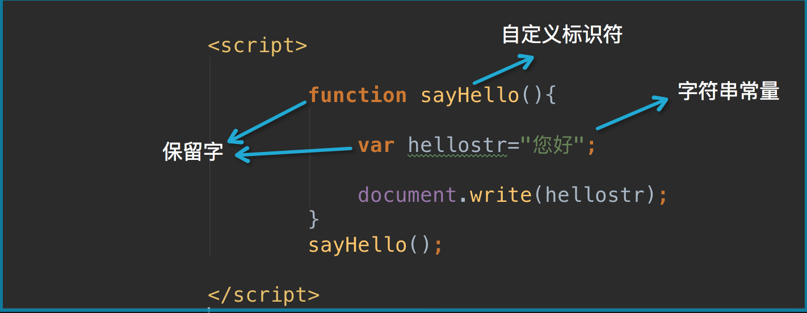
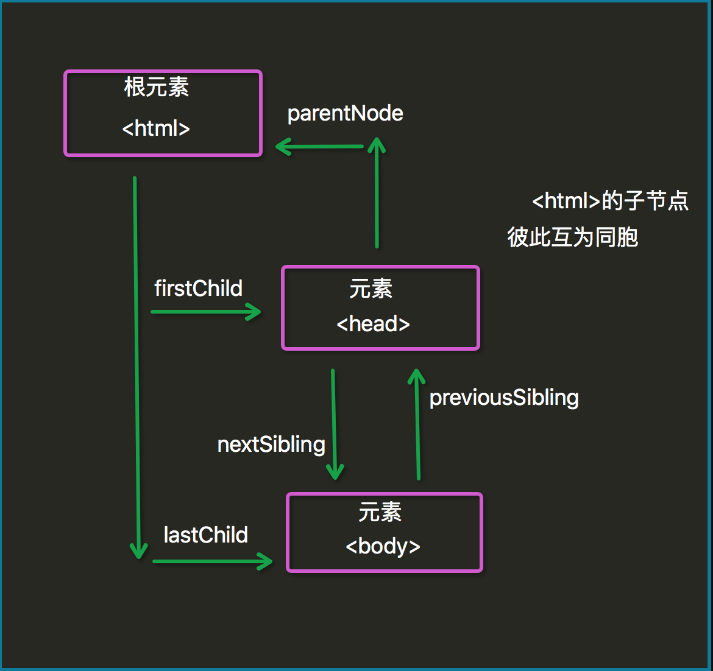
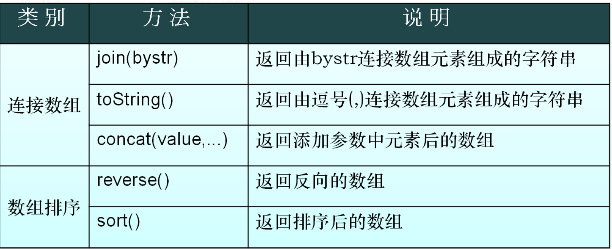
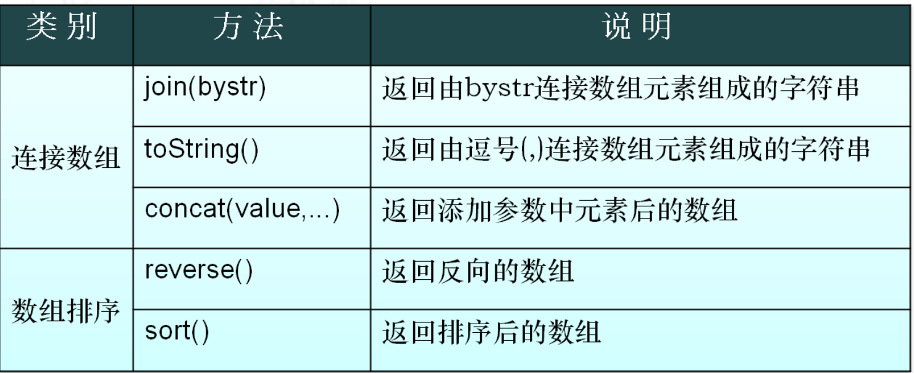
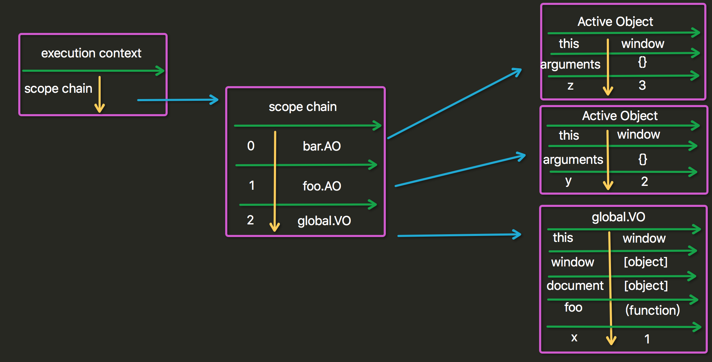
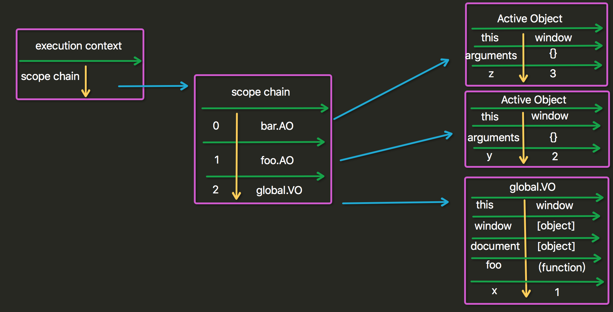

知识预览
JavaScript概述 JavaScript的历史
1992年Nombas开发出C-minus-minus(C—)的嵌入式脚本语言(最初绑定在CEnvi软件中).后将其改名ScriptEase.(客户端执行的语言)
Netscape(网景)接收Nombas的理念,(Brendan Eich)在其Netscape Navigator 2.0产品中开发出一套livescript的脚本语言.Sun和Netscape共同完成.后改名叫Javascript
微软随后模仿在其IE3.0的产品中搭载了一个JavaScript的克隆版叫Jscript.
为了统一三家,ECMA(欧洲计算机制造协会)定义了ECMA-262规范.国际标准化组织及国际电工委员会（ISO/IEC）也采纳 ECMAScript 作为标准（ISO/IEC-16262）。从此，Web 浏览器就开始努力（虽然有着不同的程度的成功和失败）将 ECMAScript 作为 JavaScript 实现的基础。EcmaScript是规范.
ECMAScript 尽管 ECMAScript 是一个重要的标准，但它并不是 JavaScript 唯一的部分，当然，也不是唯一被标准化的部分。实际上，一个完整的 JavaScript 实现是由以下 3 个不同部分组成的：
核心（ECMAScript）
文档对象模型（DOM） Document object model (整合js，css，html)
浏览器对象模型（BOM） Broswer object model（整合js和浏览器）
Javascript 在开发中绝大多数情况是基于对象的.也是面向对象的.
简单地说，ECMAScript 描述了以下内容：
语法
类型
语句
关键字
保留字
运算符
对象 (封装 继承 多态) 基于对象的语言.使用对象.
JavaScript的引入方式 1 2 3 4 5 6 {#1 直接编写#} <script> alert('hello yuan') </script> {#2 导入文件#} <script src="hello.js"></script>
二 JavaScript的基础 2.1 变量 在代数中，我们使用字母（比如 x）来保存值（比如 5）。
通过上面的表达式 z=x+y，我们能够计算出 z 的值为 11。
在 JavaScript 中，这些字母被称为变量。
0 变量是弱类型的(很随便)；
1 声明变量时不用声明变量类型. 全都使用var关键字;
2 一行可以声明多个变量.并且可以是不同类型.
1 var name="yuan", age=20, job="lecturer";
3 (了解) 声明变量时 可以不用var. 如果不用var 那么它是全局变量.
4 变量命名,首字符只能是字母,下划线,$美元符 三选一，且区分大小写，x与X是两个变量
5 变量还应遵守以下某条著名的命名规则：
1 2 3 4 5 6 7 8 9 Camel 标记法 首字母是小写的，接下来的字母都以大写字符开头。例如： var myTestValue = 0, mySecondValue = "hi"; Pascal 标记法 首字母是大写的，接下来的字母都以大写字符开头。例如： Var MyTestValue = 0, MySecondValue = "hi"; 匈牙利类型标记法 在以 Pascal 标记法命名的变量前附加一个小写字母（或小写字母序列），说明该变量的类型。例如，i 表示整数，s 表示字符串，如下所示“ Var iMyTestValue = 0, sMySecondValue = "hi";
注意：
1 2 3 4 5 6 7 8 9 10 11 function func1(){ var a = 123; b=456 } func1(); // alert(a); // alert(b); // 不推荐
2.2 基础规范 1 每行结束可以不加分号. 没有分号会以换行符作为每行的结束
1 2 3 4 5 6 7 8 9 10 11 12 13 14 15 16 17 a=1;b=2; a=1 b=2;------错误 a=1 b=2 //推荐 a=1; b=2; { a=1; b=2; //推荐加tab a=1; b=2; }
2 注释 支持多行注释和单行注释. / / //
3 使用{}来封装代码块
2.3 常量和标识符 常量 ：直接在程序中出现的数据值
标识符 ：
由不以数字开头的字母、数字、下划线(_)、美元符号($)组成
常用于表示函数、变量等的名称
例如：_abc,$abc,abc,abc123是标识符，而1abc不是
JavaScript语言中代表特定含义的词称为保留字，不允许程序再定义为标识符

2.4 数据类型 image
数字类型(Number) 1 2 3 4 5 6 简介 最基本的数据类型 不区分整型数值和浮点型数值 所有数字都采用64位浮点格式存储，相当于Java和C语言中的double格式 能表示的最大值是±1.7976931348623157 x 10308 能表示的最小值是±5 x 10 -324
整数：
16进制和8进制数的表达
1 2 # 2进制: 1111 0011 1101 0100 <-----> 16进制:0xF3D4 <-----> 10进制:62420 # 2进制: 1 111 001 111 010 100 <-----> 8进制:0171724
字符串(String) 1 2 3 4 5 6 7 简介 是由Unicode字符、数字、标点符号组成的序列 字符串常量首尾由单引号或双引号括起 JavaScript中没有字符类型 常用特殊字符在字符串中的表达 字符串中部分特殊字符必须加上右划线\ 常用的转义字符 \n:换行 \':单引号 \":双引号 \\:右划线
String数据类型的使用
特殊字符的使用方法和效果
Unicode的插入方法
1 2 3 4 <script> var str="\u4f60\u597d\n欢迎来到\"JavaScript世界\""; alert(str); </script>
布尔型(Boolean) 1 2 3 4 5 6 7 8 9 简介 Boolean类型仅有两个值：true和false，也代表1和0，实际运算中true=1,false=0 布尔值也可以看作on/off、yes/no、1/0对应true/false Boolean值主要用于JavaScript的控制语句，例如 if (x==1){ y=y+1; }else { y=y-1; }
Null & Undefined Undefined 类型
Undefined 类型只有一个值，即 undefined。当声明的变量未初始化时，该变量的默认值是 undefined。
当函数无明确返回值时，返回的也是值 “undefined”;
Null 类型
另一种只有一个值的类型是 Null，它只有一个专用值 null，即它的字面量。值 undefined 实际上是从值 null 派生来的，因此 ECMAScript 把它们定义为相等的。
尽管这两个值相等，但它们的含义不同。undefined 是声明了变量但未对其初始化时赋予该变量的值，null 则用于表示尚未存在的对象（在讨论 typeof 运算符时，简单地介绍过这一点）。如果函数或方法要返回的是对象，那么找不到该对象时，返回的通常是 null。
var person=new Person()
var person=null
数据类型转换 1 2 3 4 JavaScript属于松散类型的程序语言 变量在声明的时候并不需要指定数据类型 变量只有在赋值的时候才会确定数据类型 表达式中包含不同类型数据则在计算过程中会强制进行类别转换
数字 + 字符串：数字转换为字符串
数字 + 布尔值：true转换为1，false转换为0
字符串 + 布尔值：布尔值转换为字符串true或false
强制类型转换函数
1 2 3 4 5 函数parseInt： 强制转换成整数 例如parseInt("6.12")=6 ; parseInt(“12a")=12 ; parseInt(“a12")=NaN ;parseInt(“1a2")=1 函数parseFloat： 强制转换成浮点数 parseFloat("6.12")=6.12 函数eval： 将字符串强制转换为表达式并返回结果 eval("1+1")=2 ; eval("1<2")=true
类型查询函数( typeof) ECMAScript 提供了 typeof 运算符来判断一个值是否在某种类型的范围内。可以用这种运算符判断一个值是否表示一种原始类型：如果它是原始类型，还可以判断它表示哪种原始类型。
1 2 3 4 5 6 函数typeof ：查询数值当前类型 (string / number / boolean / object ) 例如typeof("test"+3) "string" 例如typeof(null) "object " 例如typeof(true+1) "number" 例如typeof(true-false) "number"
ECMAScript 运算符 ECMAScript 算数运算符 1 2 3 4 5 加(＋)、 减(－)、 乘(*) 、除(/) 、余数(% ) 加、减、乘、除、余数和数学中的运算方法一样 例如：9/2=4.5，4*5=20，9%2=1 -除了可以表示减号还可以表示负号 例如：x=-y +除了可以表示加法运算还可以用于字符串的连接 例如："abc"+"def"="abcdef"
递增(＋＋) 、递减(－－)
1 2 3 4 5 6 7 8 9 假如x=2，那么x++表达式执行后的值为3，x--表达式执行后的值为1 i++相当于i=i+1，i--相当于i=i-1 递增和递减运算符可以放在变量前也可以放在变量后：--i var i=1; console.log(i++); #先执行后加法 console.log(++i); #先加法后执行 console.log(i--); console.log(--i);
一元加减法：
1 2 3 4 5 6 7 8 9 10 11 12 13 14 15 16 17 18 19 20 21 22 23 24 var a=1; var b=1; a=-a; //a=-1 var c="10"; alert(typeof (c)); c=+c; //类型转换 alert(typeof (c)); // ------------------- var d="yuan"; d=+d; alert(d);//NaN:属于Number类型的一个特殊值,当遇到将字符串转成数字无效时,就会得到一个NaN数据 alert(typeof(d));//Number //NaN特点: var n=NaN; alert(n>3); alert(n<3); alert(n==3); alert(n==NaN); alert(n!=NaN);//NaN参与的所有的运算都是false,除了!=
ECMAScript 逻辑运算符 1 2 3 4 5 6 7 8 等于 ( == ) 、不等于( != ) 、 大于( > ) 、 小于( < ) 大于等于(>=) 、小于等于(<=) 与 (&&) 、或(||) 、非(!) 1 && 1 = 1 1 || 1 = 1 1 && 0 = 0 1 || 0 = 1 0 && 0 = 0 0 || 0 = 0 !0=1 !1=0
逻辑 AND 运算符(&&) 逻辑 AND 运算的运算数可以是任何类型的，不止是 Boolean 值。
如果某个运算数不是原始的 Boolean 型值，逻辑 AND 运算并不一定返回 Boolean 值：
如果某个运算数是 null，返回 null。
如果某个运算数是 NaN，返回 NaN。
如果某个运算数是 undefined，返回undefined。
逻辑 OR 运算符(||) 与逻辑 AND 运算符相似，如果某个运算数不是 Boolean 值，逻辑 OR 运算并不一定返回 Boolean 值
ECMAScript 赋值运算符 1 2 3 4 5 6 7 赋值 = JavaScript中=代表赋值，两个等号==表示判断是否相等 例如，x=1表示给x赋值为1 if (x==1){...}程序表示当x与1相等时 if(x==“on”){…}程序表示当x与“on”相等时 配合其他运算符形成的简化表达式 例如i+=1相当于i=i+1，x&=y相当于x=x&y
实例：
1 2 3 4 5 6 7 8 9 10 2 == “2” #进行类型转换后比较 2 === “2” #不进行类型转换直接进行比较 4 != “4” 4 !== “4” var a = 2; var b = 4; var c = a<b | --b>--a; var c = a<b || --b>--a; var c = a<b &&--b>--a; var c = a<b & --b>--a;
ECMAScript等性运算符 执行类型转换的规则如下：
如果一个运算数是 Boolean 值，在检查相等性之前，把它转换成数字值。false 转换成 0，true 为 1。
如果一个运算数是字符串，另一个是数字，在检查相等性之前，要尝试把字符串转换成数字。
如果一个运算数是对象，另一个是字符串，在检查相等性之前，要尝试把对象转换成字符串。
如果一个运算数是对象，另一个是数字，在检查相等性之前，要尝试把对象转换成数字。
在比较时，该运算符还遵守下列规则：
值 null 和 undefined 相等。
在检查相等性时，不能把 null 和 undefined 转换成其他值。
如果某个运算数是 NaN，等号将返回 false，非等号将返回 true。
如果两个运算数都是对象，那么比较的是它们的引用值。如果两个运算数指向同一对象，那么等号返回 true，否则两个运算数不等。
ECMAScript 关系运算符** (重要)**1 2 var bResult = "Blue" < "alpha"; alert(bResult); //输出 true
在上面的例子中，字符串 “Blue” 小于 “alpha”，因为字母 B 的字符代码是 66，字母 a 的字符代码是 97。
比较数字和字符串
另一种棘手的状况发生在比较两个字符串形式的数字时，比如：
1 2 var bResult = "25" < "3"; alert(bResult); //输出 "true"
上面这段代码比较的是字符串 “25” 和 “3”。两个运算数都是字符串，所以比较的是它们的字符代码（”2” 的字符代码是 50，”3” 的字符代码是 51）。
不过，如果把某个运算数该为数字，那么结果就有趣了：
1 2 var bResult = "25" < 3; alert(bResult); //输出 "false"
这里，字符串 “25” 将被转换成数字 25，然后与数字 3 进行比较，结果不出所料。
总结：
1 2 比较运算符两侧如果一个是数字类型,一个是其他类型,会将其类型转换成数字类型. 比较运算符两侧如果都是字符串类型,比较的是最高位的asc码,如果最高位相等,继续取第二位比较.
Boolean运算符(重要) 1 2 3 4 5 6 7 var temp=new Object();// false;[];0; null; undefined;object(new Object();) if(temp){ console.log("yuan") }else { console.log("alex") }
全等号和非全等号 等号和非等号的同类运算符是全等号和非全等号。这两个运算符所做的与等号和非等号相同，只是它们在检查相等性前，不执行类型转换。
控制语句 if 控制语句 1 2 3 4 5 6 7 8 9 10 11 if-else基本格式 if (表达式){ 语句１; ...... }else{ 语句２; ..... } 功能说明 如果表达式的值为true则执行语句1, 否则执行语句2
1 2 3 4 5 6 7 8 9 10 11 12 13 14 15 16 17 18 var x= (new Date()).getDay(); //获取今天的星期值，0为星期天 var y; if ( (x==6) || (x==0) ) { y="周末"; }else{ y="工作日"; } alert(y); //等价于 y="工作日"; if ( (x==6) || (x==0) ) { y="周末"; }
if 可以单独使用
1 2 3 4 5 6 7 8 9 10 if语句嵌套格式 if (表达式1) { 语句1; }else if (表达式2){ 语句2; }else if (表达式3){ 语句3; } else{ 语句4; }
1 2 3 4 5 6 7 8 9 10 11 if (x==1){ y="星期一"; }else if (x==2){ y="星期二"; ... }else if (x==6){ y="星期六"; }else if (x==0){ y="星期日"; }else{ y="未定义";
switch 选择控制语句 1 2 3 4 5 6 7 switch基本格式 switch (表达式) { case 值1:语句1;break; case 值2:语句2;break; case 值3:语句3;break; default:语句4; }
1 2 3 4 5 6 7 8 9 10 switch(x){ case 1:y="星期一"; break; case 2:y="星期二"; break; case 3:y="星期三"; break; case 4:y="星期四"; break; case 5:y="星期五"; break; case 6:y="星期六"; break; case 7:y="星期日"; break; default: y="未定义"; }
switch 比else if 结构更加简洁清晰，使程序可读性更强,效率更高。
1 2 3 4 5 6 7 8 9 10 11 12 13 14 15 16 17 18 19 20 21 首先要看一个问题，if 语句适用范围比较广，只要是 boolean 表达式都可以用 if 判断；而 switch 只能对基本类型进行数值比较。两者的可比性就仅限在两个基本类型比较的范围内。 说到基本类型的数值比较，那当然要有两个数。然后重点来了—— if 语句每一句都是独立的，看下面的语句： if (a == 1) ... else if (a == 2) ... 这样 a 要被读入寄存器两次，1 和 2 分别被读入寄存器一次。于是你是否发现其实 a 读两次是有点多余的，在你全部比较完之前只需要一次读入寄存器就行了，其余都是额外开销。但是 if 语句必须每次都把里面的两个数从内存拿出来读到寄存器，它不知道你其实比较的是同一个 a。 于是 switch case 就出来了，把上面的改成 switch case 版本： switch (a) { case 0: break; case 1: } 总结: 1.switch用来根据一个整型值进行多路分支，并且编译器可以对多路分支进行优化 2.switch-case只将表达式计算一次,然后将表达式的值与每个case的值比较,进而选 择执行哪一个case的语句块 3.if..else 的判断条件范围较广，每条语句基本上独立的，每次判断时都要条件加载 一次。 所以在多路分支时用switch比if..else if .. else结构要效率高。
for 循环控制语句 1 2 3 4 5 6 7 for循环基本格式 for (初始化;条件;增量){ 语句1; ... } 功能说明 实现条件循环，当条件成立时，执行语句1，否则跳出循环体
1 2 3 4 5 6 7 8 9 10 for (var i=1;i<=7;i++){ document.write("<H"+i+">hello</H "+i+"> "); document.write("<br>"); } ---------------------------------------------- var arr=[1,"hello",true]//var dic={"1":"111"} for (var i in arr){ console.log(i) console.log(arr[i]) }
注意：
1 2 3 4 5 6 7 8 9 10 11 12 13 14 doms=document.getElementsByTagName("p"); for (var i in doms){ console.log(i); // 0 1 2 length item namedItem //console.log(doms[i]) } //循环的是你获取的th一个DOM元素集，for in用来循环对象的所有属性，dom元素集包含了你上面输出的属性。 //如果你只要循环dom对象的话，可以用for循环: for (var i=0;i<doms.length;i++){ console.log(i) ; // 0 1 2 //console.log(doms[i]) }
结论：for i in 不推荐使用.
while 循环控制语句 1 2 3 4 5 6 7 while循环基本格式 while (条件){ 语句1； ... } 功能说明 运行功能和for类似，当条件成立循环执行语句花括号{}内的语句，否则跳出循环
1 2 3 4 5 6 7 var i=1; while (i<=7) { document.write("<H"+i+">hello</H "+i+"> "); document.write("<br>"); i++; } //循环输出H1到H7的字体大小
1 2 3 4 5 6 7 8 9 10 11 12 <script language="JavaScript"> /* sayhello是定义的函数名，前面必须加上function和空格*/ function sayHello(){ var hellostr; var myname=prompt("请问您贵姓？","苑"); hellostr="您好，"+myname+'先生，欢迎进入"探索之旅"！'; alert(hellostr); document.write(hellostr); } //这里是对前面定义的函数进行调用 sayHello(); </script>
练习：分别用for循环和while循环计算出1-100的和？
异常处理 1 2 3 4 5 6 7 8 9 10 try { //这段代码从上往下运行，其中任何一个语句抛出异常该代码块就结束运行 } catch (e) { // 如果try代码块中抛出了异常，catch代码块中的代码就会被执行。 //e是一个局部变量，用来指向Error对象或者其他抛出的对象 } finally { //无论try中代码是否有异常抛出（甚至是try代码块中有return语句），finally代码块中始终会被执行。 }
注：主动抛出异常 throw Error(‘xxxx’)
ECMA对象 从传统意义上来说，ECMAScript 并不真正具有类。事实上，除了说明不存在类，在 ECMA-262 中根本没有出现“类”这个词。ECMAScript 定义了“对象定义”，逻辑上等价于其他程序设计语言中的类。
var o = new Object();
对象的概念与分类：
由ECMAScript定义的本地对象.独立于宿主环境的 ECMAScript 实现提供的对象.(native object)
ECMAScript 实现提供的、独立于宿主环境的所有对象，在 ECMAScript 程序开始执行时出现.这意味着开发者不必明确实例化内置对象，它已被实例化了。ECMA-262 只定义了两个内置对象，即 Global 和 Math （它们也是本地对象，根据定义，每个内置对象都是本地对象）。（built-in object）
所有非本地对象都是宿主对象（host object），即由 ECMAScript 实现的宿主环境提供的对象。所有 BOM 和 DOM 对象都是宿主对象。
object对象 ：ECMAScript 中的所有对象都由这个对象继承而来；Object 对象中的所有属性和方法都会出现在其他对象中
1 2 ToString() : 返回对象的原始字符串表示。 ValueOf() : 返回最适合该对象的原始值。对于许多对象，该方法返回的值都与 ToString() 的返回值相同。
11种内置对象 包括：
Array ,String , Date, Math, Boolean, Number Function, Global, Error, RegExp , Object
简介：
在JavaScript中除了null和undefined以外其他的数据类型都被定义成了对象，也可以用创建对象的方法定义变量，String、Math、Array、Date、RegExp都是JavaScript中重要的内置对象，在JavaScript程序大多数功能都是通过对象实现的
1 2 3 4 5 6 7 8 9 10 <script language="javascript"> var aa=Number.MAX_VALUE; //利用数字对象获取可表示最大数 var bb=new String("hello JavaScript"); //创建字符串对象 var cc=new Date(); //创建日期对象 var dd=new Array("星期一","星期二","星期三","星期四"); //数组对象 </script>
String对象 自动创建字符串对象：
1 2 3 var str1="hello world"; alert(str1.length); alert(str1.substr(1,5));
调用字符串的对象属性或方法时自动创建对象，用完就丢弃
手工创建字符串对象
1 2 3 var str1= new String("hello word"); alert(str1.length); alert(str1.substr(1,3));
采用new创建字符串对象str1，全局有效
String对象的属性 var str1=”String对象”;
var str2=””;
alert(“str1长度 “+str1.length);
alert(“str2长度 “+str2.length);
String对象的方法(1) —— 格式编排方法
格式编排方法返回值列表
1 2 3 4 5 6 7 8 9 书写格式: String对象提供了一组针对HTML格式的方法，如x.anchor()返回锚定义字符串<a>x</a>， x.bold()返回粗体表示字符串<b>x</b>，x.sup()返回上标格式字符串<sup>x</sup>。 ----------------------------------------- var x="yuan"; var y="x.italics():"+x.italics(); document.write(y.fontsize(10));//<font size="10">x.italics():<i>yuan</i></font>
String对象的方法(2)—— 大小写转换
1 2 3 4 5 6 7 8 var str1="AbcdEfgh"; var str2=str1.toLowerCase(); var str3=str1.toUpperCase(); alert(str2); //结果为"abcdefgh" alert(str3); //结果为"ABCDEFGH"
String对象的方法(3) —— 获取指定字符
1 2 3 4 5 6 7 8 9 10 11 12 13 14 15 16 17 18 19 20 21 22 书写格式 x.charAt(index) x.charCodeAt(index) 使用注解 x代表字符串对象 index代表字符位置 index从0开始编号 charAt返回index位置的字符 charCodeAt返回index位置的Unicode编码 ---------------------- var str1="welcome to the world of JS! 苑昊"; var str2=str1.charAt(28); var str3=str1.charCodeAt(28); alert(str2); //结果为"苑" alert(str3); //结果为33489
String对象的方法(4)—— 查询字符串
1 2 3 4 5 6 7 8 9 10 11 12 13 14 15 16 17 18 19 20 21 22 23 24 25 26 27 28 29 30 31 32 33 34 35 36 37 38 39 40 //书写格式 // //x.indexOf(findstr,index) //x.lastIndexOf(findstr) //------------------------------------- var str1="welcome to the world of JS!"; var str2=str1.indexOf("l"); var str3=str1.lastIndexOf("l"); alert(str2); //结果为2 alert(str3); //结果为18 //-------*********************************************************------- //书写格式 // //x.match(regexp) // //x.search(regexp) // //使用注解 // //x代表字符串对象 // //regexp代表正则表达式或字符串 // //match返回匹配字符串的数组，如果没有匹配则返回null // //search返回匹配字符串的首字符位置索引 //------------------------------------- var str1="welcome to the world of JS!"; var str2=str1.match("world"); var str3=str1.search("world"); alert(str2[0]); //结果为"world" alert(str3); //结果为15
String对象的方法(5) ——子字符串处理
截取子字符串
1 2 3 4 5 6 7 8 9 10 11 12 13 14 15 16 17 18 19 20 21 22 23 24 25 26 27 28 29 30 31 32 33 34 35 36 37 38 39 40 41 42 43 44 45 46 //截取子字符串 // //书写格式 // //x.substr(start, length) // //x.substring(start, end) // //使用注解 // //x代表字符串对象 // //start表示开始位置 // //length表示截取长度 // //end是结束位置加1 // //第一个字符位置为0 var str1="abcdefgh"; var str2=str1.substr(2,4); var str3=str1.substring(2,4); alert(str2); //结果为"cdef" alert(str3); //结果为"cd" //-------*********************************************************------- //x.slice(start, end) var str1="abcdefgh"; var str2=str1.slice(2,4); var str3=str1.slice(4); var str4=str1.slice(2,-1); var str5=str1.slice(-3,-1); alert(str2); //结果为"cd" alert(str3); //结果为"efgh" alert(str4); //结果为"cdefg" alert(str5); //结果为"fg"
替换子字符串
1 2 3 4 5 6 //x.replace(findstr,tostr) var str1="abcdefgh"; var str2=str1.replace("cd","aaa"); alert(str2); //结果为"abaaaefgh"
分割字符串
1 2 3 4 5 6 var str1="一,二,三,四,五,六,日"; var strArray=str1.split(","); alert(strArray[1]); //结果为"二"
连接字符串
1 2 3 4 5 6 7 8 9 10 11 12 13 //y=x.concat(addstr) // //使用注解 // //x代表字符串对象 //addstr为添加字符串 //返回x+addstr字符串 var str1="abcd"; var str2=str1.concat("efgh"); alert(str2); //结果为"abcdefgh"
Array对象 创建数组对象 1 2 3 4 5 6 7 8 9 10 11 12 13 14 15 16 17 18 19 Array 对象用于在单个的变量中存储多个值。 语法: 创建方式1: var a=[1,2,3]; 创建方式2: new Array(); // 创建数组时允许指定元素个数也可以不指定元素个数。 new Array(size);//if 1个参数且为数字,即代表size,not content 初始化数组对象: var cnweek=new Array(7); cnweek[0]="星期日"; cnweek[1]="星期一"; ... cnweek[6]="星期六"; new Array(element0, element1, ..., elementn)//也可以直接在建立对象时初始化数组元素，元素类型允许不同 var test=new Array(100,"a",true);
创建二维数组 1 2 3 4 5 6 7 8 9 10 11 var cnweek=new Array(7); for (var i=0;i<=6;i++){ cnweek[i]=new Array(2); } cnweek[0][0]="星期日"; cnweek[0][1]="Sunday"; cnweek[1][0]="星期一"; cnweek[1][1]="Monday"; ... cnweek[6][0]="星期六"; cnweek[6][1]="Saturday";
Array对象的属性 获取数组元素的个数：length
1 2 3 4 5 6 7 8 9 10 11 var cnweek=new Array(7); cnweek[0]="星期日"; cnweek[1]="星期一"; cnweek[2]="星期二"; cnweek[3]="星期三"; cnweek[4]="星期四"; cnweek[5]="星期五"; cnweek[6]="星期六"; for (var i=0;i<cnweek.length;i++){ document.write(cnweek[i]+" | "); }
Array对象的方法
连接数组-join方法
1 2 3 4 5 6 7 8 9 10 11 12 13 14 15 //书写格式 //x.join(bystr) //使用注解 // //x代表数组对象 //bystr作为连接数组中元素的字符串 //返回连接后的字符串 //与字符串的split功能刚好相反 var arr1=[1, 2, 3, 4, 5, 6, 7]; var str1=arr1.join("-"); alert(str1); //结果为"1-2-3-4-5-6-7"
连接数组-concat方法
1 2 3 4 5 6 7 8 9 10 11 12 13 14 //连接数组-concat方法 // //x.concat(value,...) var a = [1,2,3]; var a = new Array(1,2,3); var b=a.concat(4,5) ; alert(a.toString()); //返回结果为1,2,3 alert(b.toString()); //返回结果为1,2,3,4,5
数组排序-reverse sort
默认将数字转换为字符串后比较。
1 2 3 4 5 6 7 8 9 10 11 12 13 14 15 16 17 18 19 20 21 22 23 24 25 26 27 28 29 30 31 32 33 34 35 36 37 38 39 40 //x.reverse() //x.sort() var arr1=[32, 12, 111, 444]; //var arr1=["a","d","f","c"]; arr1.reverse(); //颠倒数组元素 alert(arr1.toString()); //结果为444,111,12,32 arr1.sort(); //排序数组元素 alert(arr1.toString()); //结果为111,12,32,444 //------------------------------ arr=[1,5,2,100]; //arr.sort(); //alert(arr); //如果就想按着数字比较呢? function intSort(a,b){ if (a>b){ return 1;//-1 } else if(a<b){ return -1;//1 } else { return 0 } } arr.sort(intSort); alert(arr); function IntSort(a,b){ return a-b; }
数组切片-slice
1 2 3 4 5 6 7 8 9 10 11 12 13 14 15 16 17 18 19 20 21 22 //x.slice(start, end) // //使用注解 // //x代表数组对象 //start表示开始位置索引 //end是结束位置下一数组元素索引编号 //第一个数组元素索引为0 //start、end可为负数，-1代表最后一个数组元素 //end省略则相当于从start位置截取以后所有数组元素 var arr1=['a','b','c','d','e','f','g','h']; var arr2=arr1.slice(2,4); var arr3=arr1.slice(4); var arr4=arr1.slice(2,-1); alert(arr2.toString()); //结果为"c,d" alert(arr3.toString()); //结果为"e,f,g,h" alert(arr4.toString()); //结果为"c,d,e,f,g"
删除子数组
1 2 3 4 5 6 7 8 9 10 11 12 13 14 15 16 17 18 19 20 21 22 //x. splice(start, deleteCount, value, ...) // //使用注解 // //x代表数组对象 //splice的主要用途是对数组指定位置进行删除和插入 //start表示开始位置索引 //deleteCount删除数组元素的个数 //value表示在删除位置插入的数组元素 //value参数可以省略 var a = [1,2,3,4,5,6,7,8]; a.splice(1,2); //a变为 [1,4,5,6,7,8] alert(a.toString()); a.splice(1,1); //a变为[1,5,6,7,8] alert(a.toString()); a.splice(1,0,2,3); //a变为[1,2,3,5,6,7,8] alert(a.toString());
数组的进出栈操作(1)
1 2 3 4 5 6 7 8 9 10 11 12 13 14 15 16 17 18 19 20 21 22 //push pop这两个方法模拟的是一个栈操作 //x.push(value, ...) 压栈 //x.pop() 弹栈 //使用注解 // //x代表数组对象 //value可以为字符串、数字、数组等任何值 //push是将value值添加到数组x的结尾 //pop是将数组x的最后一个元素删除 var arr1=[1,2,3]; arr1.push(4,5); alert(arr1); //结果为"1,2,3,4,5" arr1.push([6,7]); alert(arr1) //结果为"1,2,3,4,5,6,7" arr1.pop(); alert(arr1); //结果为"1,2,3,4,5"
数组的进出栈操作(2)
1 2 3 4 5 6 7 8 9 10 11 12 13 14 15 16 17 18 19 20 // unshift shift //x.unshift(value,...) //x.shift() //使用注解 // //x代表数组对象 //value可以为字符串、数字、数组等任何值 //unshift是将value值插入到数组x的开始 //shift是将数组x的第一个元素删除 var arr1=[1,2,3]; arr1.unshift(4,5); alert(arr1); //结果为"4,5,1,2,3" arr1. unshift([6,7]); alert(arr1); //结果为"6,7,4,5,1,2,3" arr1.shift(); alert(arr1); //结果为"4,5,1,2,3"
总结js的数组特性：
1 2 3 4 5 6 7 8 9 // js中数组的特性 //java中数组的特性, 规定是什么类型的数组,就只能装什么类型.只有一种类型. //js中的数组特性1: js中的数组可以装任意类型,没有任何限制. //js中的数组特性2: js中的数组,长度是随着下标变化的.用到多长就有多长. var arr5 = ['abc',123,1.14,true,null,undefined,new String('1213'),new Function('a','b','alert(a+b)')]; /* alert(arr5.length);//8 arr5[10] = "hahaha"; alert(arr5.length); //11 alert(arr5[9]);// undefined */
Date对象 创建Date对象 1 2 3 4 5 6 7 8 9 10 11 12 13 14 15 16 17 //方法1：不指定参数 var nowd1=new Date(); alert(nowd1.toLocaleString( )); //方法2：参数为日期字符串 var nowd2=new Date("2004/3/20 11:12"); alert(nowd2.toLocaleString( )); var nowd3=new Date("04/03/20 11:12"); alert(nowd3.toLocaleString( )); //方法3：参数为毫秒数 var nowd3=new Date(5000); alert(nowd3.toLocaleString( )); alert(nowd3.toUTCString()); //方法4：参数为年月日小时分钟秒毫秒 var nowd4=new Date(2004,2,20,11,12,0,300); alert(nowd4.toLocaleString( )); //毫秒并不直接显示
Date对象的方法—获取日期和时间 1 2 3 4 5 6 7 8 9 10 11 获取日期和时间 getDate() 获取日 getDay () 获取星期 getMonth () 获取月（0-11） getFullYear () 获取完整年份 getYear () 获取年 getHours () 获取小时 getMinutes () 获取分钟 getSeconds () 获取秒 getMilliseconds () 获取毫秒 getTime () 返回累计毫秒数(从1970/1/1午夜)
练习实例：
1 2 3 4 5 6 7 8 9 10 11 12 13 14 15 16 17 18 19 20 21 22 23 24 25 26 27 28 29 30 31 32 33 34 35 36 37 38 function getCurrentDate(){ //1. 创建Date对象 var date = new Date(); //没有填入任何参数那么就是当前时间 //2. 获得当前年份 var year = date.getFullYear(); //3. 获得当前月份 js中月份是从0到11. var month = date.getMonth()+1; //4. 获得当前日 var day = date.getDate(); //5. 获得当前小时 var hour = date.getHours(); //6. 获得当前分钟 var min = date.getMinutes(); //7. 获得当前秒 var sec = date.getSeconds(); //8. 获得当前星期 var week = date.getDay(); //没有getWeek // 2014年06月18日 15:40:30 星期三 return year+"年"+changeNum(month)+"月"+day+"日 "+hour+":"+min+":"+sec+" "+parseWeek(week); } alert(getCurrentDate()); //解决 自动补齐成两位数字的方法 function changeNum(num){ if(num < 10){ return "0"+num; }else{ return num; } } //将数字 0~6 转换成 星期日到星期六 function parseWeek(week){ var arr = ["星期日","星期一","星期二","星期三","星期四","星期五","星期六"]; // 0 1 2 3 ............. return arr[week]; }
Date对象的方法—设置日期和时间 1 2 3 4 5 6 7 8 9 10 11 12 13 14 15 16 17 18 19 20 21 22 23 24 //设置日期和时间 //setDate(day_of_month) 设置日 //setMonth (month) 设置月 //setFullYear (year) 设置年 //setHours (hour) 设置小时 //setMinutes (minute) 设置分钟 //setSeconds (second) 设置秒 //setMillliseconds (ms) 设置毫秒(0-999) //setTime (allms) 设置累计毫秒(从1970/1/1午夜) var x=new Date(); x.setFullYear (1997); //设置年1997 x.setMonth(7); //设置月7 x.setDate(1); //设置日1 x.setHours(5); //设置小时5 x.setMinutes(12); //设置分钟12 x.setSeconds(54); //设置秒54 x.setMilliseconds(230); //设置毫秒230 document.write(x.toLocaleString( )+"<br>"); //返回1997年8月1日5点12分54秒 x.setTime(870409430000); //设置累计毫秒数 document.write(x.toLocaleString( )+"<br>"); //返回1997年8月1日12点23分50秒
Date对象的方法—日期和时间的转换 1 2 3 4 5 6 7 8 9 10 11 12 日期和时间的转换: getTimezoneOffset():8个时区×15度×4分/度=480; 返回本地时间与GMT的时间差，以分钟为单位 toUTCString() 返回国际标准时间字符串 toLocalString() 返回本地格式时间字符串 Date.parse(x) 返回累计毫秒数(从1970/1/1午夜到本地时间) Date.UTC(x) 返回累计毫秒数(从1970/1/1午夜到国际时间)
RegExp对象 1 2 3 4 5 6 7 8 9 10 11 12 13 14 15 16 17 18 19 20 21 22 23 24 25 26 27 //RegExp对象 // 在表单验证时使用该对象验证用户填入的字符串是否符合规则. //创建正则对象方式1 参数1 正则表达式 参数2 验证模式 g global / i 忽略大小写. //参数2一般填写g就可以，也有“gi”. // 用户名 首字母必须是英文, 除了第一位其他只能是英文数字和_ . 长度最短不能少于6位 最长不能超过12位 //----------------------------创建方式1 /* var reg1 = new RegExp("^[a-zA-Z][a-zA-Z0-9_]{5,11}$","g"); // //验证字符串 var str = "bc123"; alert(reg1.test(str));// true //----------------------------创建方式2 /填写正则表达式/匹配模式; var reg2 = /^[a-zA-Z][a-zA-Z0-9_]{5,11}$/g; alert(reg2.test(str));// true */ //-------------------------------正则对象的方法------------------- //test方法 ==> 测试一个字符串是否复合 正则规则. 返回值是true 和false. //-------------------------String 中与正则结合的4个方法------------------. // macth search split replace var str = "hello world"; //alert(str.match(/o/g)); //查找字符串中 复合正则的 内容. //alert(str.search(/h/g));// 0 查找字符串中符合正则表达式的内容位置 //alert(str.split(/o/g)); // 按照正则表达式对字符串进行切割. 返回数组; alert(str.replace(/o/g, "s")); // hells wsrld 对字符串按照正则进行替换.
Math对象 1 2 3 4 5 6 7 8 9 10 11 12 13 14 15 16 17 18 19 20 21 22 23 24 25 26 27 28 29 30 31 //Math对象 //该对象中的属性方法 和数学有关. //Math是内置对象 , 与Global的不同之处是, 在调用时 需要打出 "Math."前缀. //属性学习: //alert(Math.PI); //方法学习: //alert(Math.random()); // 获得随机数 0~1 不包括1. //alert(Math.round(1.5)); // 四舍五入 //练习：获取1-100的随机整数，包括1和100 //var num=Math.random(); //num=num*10; //num=Math.round(num); // alert(num) //============max min========================= /* alert(Math.max(1,2));// 2 alert(Math.min(1,2));// 1 */ //-------------pow-------------------------------- alert(Math.pow(2,4));// pow 计算参数1 的参数2 次方. abs(x) 返回数的绝对值。 exp(x) 返回 e 的指数。 floor(x)对数进行下舍入。 log(x) 返回数的自然对数（底为e）。 max(x,y) 返回 x 和 y 中的最高值。 min(x,y) 返回 x 和 y 中的最低值。 pow(x,y) 返回 x 的 y 次幂。 random() 返回 0 ~ 1 之间的随机数。 round(x) 把数四舍五入为最接近的整数。 sin(x) 返回数的正弦。 sqrt(x) 返回数的平方根。 tan(x) 返回角的正切。
Function 对象(重点) 函数的定义： 1 2 3 function 函数名 (参数){函数体; return 返回值; }
功能说明：
可以使用变量、常量或表达式作为函数调用的参数
函数由关键字function定义
函数名的定义规则与标识符一致，大小写是敏感的
返回值必须使用return
Function 类可以表示开发者定义的任何函数。
用 Function 类直接创建函数的语法如下：
1 2 3 4 5 6 function 函数名 (参数){ 函数体; return 返回值; } //another way: var 函数名 = new Function("参数1","参数n","function_body");
虽然由于字符串的关系，第二种形式写起来有些困难，但有助于理解函数只不过是一种引用类型，它们的行为与用 Function 类明确创建的函数行为是相同的。
实例：
1 2 3 4 5 6 7 8 9 10 11 12 alert(1); function func1(){ alert('hello yuan!'); return 8 } ret=func1(); alert(ret) －－－－－－－－－－－－－－－－ var func1=new Function("name","alert(\"hello\"+name);") func1("yuan")
注意：js的函数加载执行与python不同，它是整体加载完才会执行，所以执行函数放在函数声明上面或下面都可以：
1 2 3 4 5 6 7 8 9 10 <script> //f(); --->OK function f(){ console.log("hello") } f() //----->OK </script>
Function 对象的 length 属性
如前所述，函数属于引用类型，所以它们也有属性和方法。
比如，ECMAScript 定义的属性 length 声明了函数期望的参数个数。
Function 对象的方法
Function 对象也有与所有对象共享的 valueOf() 方法和 toString() 方法。这两个方法返回的都是函数的源代码，在调试时尤其有用。
1 `alert(void(fun1(1,2)))`
运算符void()作用：拦截方法的返回值
函数的调用 1 2 3 4 5 6 7 8 9 10 11 12 13 14 15 16 17 18 19 20 function func1(a,b){ alert(a+b); } func1(1,2); //3 func1(1,2,3);//3 func1(1); //NaN func1(); //NaN //只要函数名写对即可,参数怎么填都不报错. -------------------面试题----------- function a(a,b){ alert(a+b); } var a=1; var b=2; a(a,b)
函数的内置对象arguments 1 2 3 4 5 6 7 8 9 10 11 12 13 14 15 16 17 18 19 20 21 22 23 24 25 26 27 28 29 30 31 32 33 function add(a,b){ console.log(a+b);//3 console.log(arguments.length);//2 console.log(arguments);//[1,2] } add(1,2) ------------------arguments的用处1 ------------------ function nxAdd(){ var result=0; for (var num in arguments){ result+=arguments[num] } alert(result) } nxAdd(1,2,3,4,5) // ------------------arguments的用处2 ------------------ function f(a,b,c){ if (arguments.length!=3){ throw new Error("function f called with "+arguments.length+" arguments,but it just need 3 arguments") } else { alert("success!") } } f(1,2,3,4,5)
匿名函数 1 2 3 4 5 6 7 8 9 10 11 12 13 // 匿名函数 var func = function(arg){ return "tony"; } // 匿名函数的应用 (function(){ alert("tony"); } )() (function(arg){ console.log(arg); })('123')
函数的作用域链和闭包 作用域 js的作用域和py相似，if while等控制语句并没有自己作用域；而函数是有自己的作用域的；
1 2 3 4 5 6 7 8 9 10 11 12 if(1==1){ var s=12; } console.log(s);//12 // ---------------------- function f(){ var temp=666; } f(); console.log(temp);//Uncaught ReferenceError: temp is not defined
嵌套函数的作用域：
例1:
1 2 3 4 5 6 7 8 9 10 11 var city = 'beijing'; function func(){ var city = 'shanghai'; function inner(){ var city = 'shenzhen'; console.log(city); } inner(); } func();
例2: 1 2 3 4 5 6 7 8 9 10 11 var city = 'beijing'; function Bar(){ console.log(city); } function func(){ var city = 'shanghai'; return Bar; } var ret = func(); ret(); //beijing
闭包： 1 2 3 4 5 6 7 8 9 10 11 12 var city = 'beijing'; function func(){ var city = "shanghai"; function inner(){ // var city = "langfang"; console.log(city); } return inner; } var ret = func(); ret();
思考题1：
1 2 3 4 5 6 7 8 9 10 11 12 13 14 15 16 17 18 19 20 21 22 23 24 25 26 27 28 29 30 31 var city = 'beijing'; function func(){ var city = "shanghai"; function inner(){ // var city = "langfang"; console.log(city); } return inner; } var ret = func(); ret(); var city = 'beijing'; function Bar(){ console.log(city); } function func(){ var city = 'shanghai'; return Bar; } var ret = func(); ret(); //beijing
作用域链(Scope Chain)： 在JavaScript中，函数也是对象，实际上，JavaScript里一切都是对象。函数对象和其它对象一样，拥有可以通过代码访问的属性和一系列仅供JavaScript引擎访问的内部属性。其中一个内部属性是[[Scope]]，由ECMA-262标准第三版定义，该内部属性包含了函数被创建的作用域中对象的集合，这个集合被称为函数的作用域链，它决定了哪些数据能被函数访问。
1 2 3 4 5 6 7 8 9 10 11 12 var x=1; function foo() { var y = 2; function bar() { var z = 3; } } #bar的作用域链： barScopeChain=[bar.AO, foo.AO, global.VO]; #foo的作用域链： fooScopeChain=[foo.Ao, global.VO];
1 2 3 4 5 6 7 8 9 10 11 12 13 14 什么是AO,VO? 在函数创建时，每个函数都会创建一个活动对象Active Object(AO)，全局对象为Global Object(VO)，创建函数的过程也就是为这个对象添加属性的过程，作用域链就是由这些绑定了属性的活动对象构成的。 例如：找x变量；bar函数在搜寻变量x的过程中，先从自身AO对象上找，如果bar.AO存在这个属性，那么会直接使用这个属性的值，如果不存在，则会转到父级函数的AO对象，也就是foo.AO 如果找到x属性则使用，找不到继续 在global.VO对象查找，找到x的属性，返回属性值。如果在global.VO中没有找到，则会抛出异常ReferenceError 执行上下文。 函数在执行时会创建一个称为“执行上下文（execution context）”的内部对象，执行上下文定义了函数 执行时的环境。每个执行上下文都有自己的作用域链，用于标识符解析，当执行上下文被创建时，而它的作用 域链初始化为当前运行函数的[[Scope]]所包含的对象。 函数执行 在函数执行过程中，每遇到一个变量，都会检索从哪里获取和存储数据，该过程从作用域链头部，也就是从活 动对象开始搜索，查找同名的标识符，如果找到了就使用这个标识符对应的变量，如果没有则继续搜索作用域 链中的下一个对象，如果搜索完所有对象都未找到，则认为该标识符未定义，函数执行过程中，每个标识符都 要经历这样的搜索过程。
创建作用域链的过程
1 2 3 4 5 6 7 8 9 10 11 12 函数进入全局，创建VO对象，绑定x属性<入栈> global.VO={x=underfind; foo:reference of function}(这里只是预解析，为AO对象绑定声明的属性，函数执行时才会执行赋值语句，所以值是underfind) 遇到foo函数，创建foo.AO，绑定y属性<入栈> foo.AO={y=underfind, bar:reference of function} 遇到bar函数，创建bar.AO，绑定z属性<入栈> bar.AO={z:underfind} 作用域链和执行上下文都会保存在堆栈中，所以： bar函数的scope chain为：[0]bar.AO-->[1]foo.AO-->[2]global.VO foo函数的scope chain为：[0]foo.AO-->[1]global.Vo //建议：少定义全局变量 //理由：因为作用域链是栈的结构，全局变量在栈底，每次访问全局变量都会遍历一次栈，//这样会影响效率
函数的scope等于自身的AO对象加上父级的scope，也可以理解为一个函数的作用域等于自身活动对象加上父级作用域.
函数执行前后的作用域链：
注意：作用域链的非自己部分在函数对象被建立（函数声明、函数表达式）的时候建立，而不需要等到执行
思考题2:
1 2 3 4 5 6 7 8 9 10 11 12 13 14 15 for (var i=1; i<=9; i++) { setTimeout( function timer(){ console.log( i ); },1000 ); } //＝＝＝＝＝＝＝＝＝＝＝＝＝＝＝＝＝＝ for (var i=1; i<=9; i++) { (function(){ var j = i; setTimeout( function timer(){ console.log( j ); }, 1000 ); })();
BOM对象 BOM（浏览器对象模型），可以对浏览器窗口进行访问和操作。使用 BOM，开发者可以移动窗口、改变状态栏中的文本以及执行其他与页面内容不直接相关的动作。
使 JavaScript 有能力与浏览器“对话”。
window对象 1 2 3 4 5 window对象 所有浏览器都支持 window 对象。 概念上讲.一个html文档对应一个window对象. 功能上讲: 控制浏览器窗口的. 使用上讲: window对象不需要创建对象,直接使用即可.
Window 对象方法 1 2 3 4 5 6 7 8 9 10 11 alert() 显示带有一段消息和一个确认按钮的警告框。 confirm() 显示带有一段消息以及确认按钮和取消按钮的对话框。 prompt() 显示可提示用户输入的对话框。 open() 打开一个新的浏览器窗口或查找一个已命名的窗口。 close() 关闭浏览器窗口。 setInterval() 按照指定的周期（以毫秒计）来调用函数或计算表达式。 clearInterval() 取消由 setInterval() 设置的 timeout。 setTimeout() 在指定的毫秒数后调用函数或计算表达式。 clearTimeout() 取消由 setTimeout() 方法设置的 timeout。 scrollTo() 把内容滚动到指定的坐标。
交互方法：
1 2 3 4 5 6 7 8 9 10 11 12 13 14 15 16 17 18 19 20 21 22 23 方法讲解: //----------alert confirm prompt---------------------------- //alert('aaa'); /* var result = confirm("您确定要删除吗?"); alert(result); */ //prompt 参数1 : 提示信息. 参数2:输入框的默认值. 返回值是用户输入的内容. // var result = prompt("请输入一个数字!","haha"); // alert(result); 方法讲解: //open方法 打开和一个新的窗口 并 进入指定网址.参数1 : 网址. //调用方式1 //open("http://www.baidu.com"); //参数1 什么都不填 就是打开一个新窗口. 参数2.填入新窗口的名字(一般可以不填). 参数3: 新打开窗口的参数. open('','','width=200,resizable=no,height=100'); // 新打开一个宽为200 高为100的窗口 //close方法 将当前文档窗口关闭. //close();
练习：
1 2 3 4 5 6 7 8 9 10 11 12 13 14 15 16 17 18 19 20 21 22 23 24 25 26 27 28 29 30 var num = Math.round(Math.random()*100); function acceptInput(){ //2.让用户输入(prompt) 并接受 用户输入结果 var userNum = prompt("请输入一个0~100之间的数字!","0"); //3.将用户输入的值与 随机数进行比较 if(isNaN(+userNum)){ //用户输入的无效(重复2,3步骤) alert("请输入有效数字!"); acceptInput(); } else if(userNum > num){ //大了==> 提示用户大了,让用户重新输入(重复2,3步骤) alert("您输入的大了!"); acceptInput(); }else if(userNum < num){ //小了==> 提示用户小了,让用户重新输入(重复2,3步骤) alert("您输入的小了!"); acceptInput(); }else{ //答对了==>提示用户答对了 , 询问用户是否继续游戏(confirm). var result = confirm("恭喜您!答对了,是否继续游戏?"); if(result){ //是 ==> 重复123步骤. num = Math.round(Math.random()*100); acceptInput(); }else{ //否==> 关闭窗口(close方法). close(); } }
setInterval clearInterval
1 2 3 4 5 6 7 8 9 10 11 12 13 14 15 16 17 18 19 20 21 22 23 24 25 26 27 28 29 30 31 32 <input id="ID1" type="text" onclick="begin()"> <button onclick="end()">停止</button> <script> function showTime(){ var nowd2=new Date().toLocaleString(); var temp=document.getElementById("ID1"); temp.value=nowd2; } var clock; function begin(){ if (clock==undefined){ showTime(); clock=setInterval(showTime,1000); } } function end(){ clearInterval(clock); } </script>
setTimeout clearTimeout
1 2 3 4 5 var ID = setTimeout(abc,2000); // 只调用一次对应函数. clearTimeout(ID); function abc(){ alert('aaa'); }
History 对象 History 对象属性 History 对象包含用户（在浏览器窗口中）访问过的 URL。
History 对象是 window 对象的一部分，可通过 window.history 属性对其进行访问。
1 `length 返回浏览器历史列表中的 URL 数量。`
History 对象方法 1 2 3 back() 加载 history 列表中的前一个 URL。 forward() 加载 history 列表中的下一个 URL。 go() 加载 history 列表中的某个具体页面。
1 2 3 4 <a href="rrr.html">click</a> <button onclick=" history.forward()">>>></button> <button onclick="history.back()">back</button> <button onclick="history.go()">back</button>
Location 对象 Location 对象包含有关当前 URL 的信息。
Location 对象是 Window 对象的一个部分，可通过 window.location 属性来访问。
Location 对象方法 1 2 3 location.assign(URL) location.reload() location.replace(newURL)//注意与assign的区别
回到顶部
DOM对象(DHTML) 7.1 什么是 DOM？ DOM 是 W3C（万维网联盟）的标准。DOM 定义了访问 HTML 和 XML 文档的标准：
“W3C 文档对象模型（DOM）是中立于平台和语言的接口，它允许程序和脚本动态地访问和更新文档的内容、结构和样式。”
W3C DOM 标准被分为 3 个不同的部分：
核心 DOM - 针对任何结构化文档的标准模型
XML DOM - 针对 XML 文档的标准模型
HTML DOM - 针对 HTML 文档的标准模型
什么是 XML DOM？ －－－－>XML DOM 定义了所有 XML 元素的对象和属性，以及访问它们的方法。
什么是 HTML DOM？－－－－>HTML DOM 定义了所有 HTML 元素的对象和属性，以及访问它们的方法。
7.2 DOM 节点 根据 W3C 的 HTML DOM 标准，HTML 文档中的所有内容都是节点(NODE)：
整个文档是一个文档节点(document对象)
每个 HTML 元素是元素节点(element 对象)
HTML 元素内的文本是文本节点(text对象)
每个 HTML 属性是属性节点(attribute对象)
注释是注释节点(comment对象)
画dom树是为了展示文档中各个对象之间的关系，用于对象的导航。
节点(自身)属性:
attributes - 节点（元素）的属性节点
nodeType – 节点类型
nodeValue – 节点值
nodeName – 节点名称
innerHTML - 节点（元素）的文本值
导航属性:
parentNode - 节点（元素）的父节点 (推荐)
firstChild – 节点下第一个子元素
lastChild – 节点下最后一个子元素
childNodes - 节点（元素）的子节点
注意：
1 2 3 4 5 6 7 8 9 10 <div id="div1"> <div id="div2"></div> <p>hello yuan</p> </div> <script> var div=document.getElementById("div2"); console.log(div.nextSibling.nodeName); //思考:为什么不是P? </script>
推荐导航属性：
1 2 3 4 5 6 7 8 9 10 11 parentElement // 父节点标签元素 children // 所有子标签 firstElementChild // 第一个子标签元素 lastElementChild // 最后一个子标签元素 nextElementtSibling // 下一个兄弟标签元素 previousElementSibling // 上一个兄弟标签元素
节点树中的节点彼此拥有层级关系。
父(parent),子(child)和同胞(sibling)等术语用于描述这些关系。父节点拥有子节点。同级的子节点被称为同胞（兄弟或姐妹）。
在节点树中，顶端节点被称为根（root）
每个节点都有父节点、除了根（它没有父节点）
一个节点可拥有任意数量的子
同胞是拥有相同父节点的节点
下面的图片展示了节点树的一部分，以及节点之间的关系：

访问 HTML 元素（节点）,访问 HTML 元素等同于访问节点,我们能够以不同的方式来访问 HTML 元素：
页面查找：
通过使用 getElementById() 方法
通过使用 getElementsByTagName() 方法
通过使用 getElementsByClassName() 方法
通过使用 getElementsByName() 方法
局部查找：
1 2 3 4 5 6 7 8 9 10 11 12 13 14 15 16 17 18 19 20 21 22 23 24 25 26 <div id="div1"> <div class="div2">i am div2</div> <div name="yuan">i am div2</div> <div id="div3">i am div2</div> <p>hello p</p> </div> <script> var div1=document.getElementById("div1"); ////支持; // var ele= div1.getElementsByTagName("p"); // alert(ele.length); ////支持 // var ele2=div1.getElementsByClassName("div2"); // alert(ele2.length); ////不支持 // var ele3=div1.getElementById("div3"); // alert(ele3.length); ////不支持 // var ele4=div1.getElementsByName("yuan"); // alert(ele4.length) </script>
7.3 HTML DOM Event(事件) HTML 4.0 的新特性之一是有能力使 HTML 事件触发浏览器中的动作（action），比如当用户点击某个 HTML 元素时启动一段 JavaScript。下面是一个属性列表，这些属性可插入 HTML 标签来定义事件动作。
1 2 3 4 5 6 7 8 9 10 11 12 13 14 15 16 17 18 19 onclick 当用户点击某个对象时调用的事件句柄。 ondblclick 当用户双击某个对象时调用的事件句柄。 onfocus 元素获得焦点。 //练习：输入框 onblur 元素失去焦点。 应用场景：用于表单验证,用户离开某个输入框时,代表已经输入完了,我们可以对它进行验证. onchange 域的内容被改变。 应用场景：通常用于表单元素,当元素内容被改变时触发.（三级联动） onkeydown 某个键盘按键被按下。 应用场景: 当用户在最后一个输入框按下回车按键时,表单提交. onkeypress 某个键盘按键被按下并松开。 onkeyup 某个键盘按键被松开。 onload 一张页面或一幅图像完成加载。 onmousedown 鼠标按钮被按下。 onmousemove 鼠标被移动。 onmouseout 鼠标从某元素移开。 onmouseover 鼠标移到某元素之上。 onmouseleave 鼠标从元素离开 onselect 文本被选中。 onsubmit 确认按钮被点击。
两种为元素附加事件属性的方式
1 2 3 4 5 6 7 8 9 10 11 12 <div onclick="alert(123)">点我呀</div> <p id="abc">试一试!</p> <script> var ele=document.getElementById("abc"); ele.onclick=function(){ alert("hi"); }; </script>
注意：
1 2 3 4 5 6 7 8 9 10 11 12 13 14 15 16 <div id="abc" onclick="func1(this)">事件绑定方式1</div> <div id="id123">事件绑定方式2</div> <script> function func1(self){ console.log(self.id) } //jquery下是$(self), 这种方式this参数必须填写; //------------------------------------------ var ele=document.getElementById("id123").onclick=function(){ console.log(this.id); //jquery下是$(this), 这种方式不需要this参数; } </script>
onload：
onload 属性开发中 只给 body元素加.
1 2 3 4 5 6 7 8 9 10 11 12 13 14 15 16 17 18 19 20 21 22 23 24 25 26 27 28 29 30 31 <!DOCTYPE html> <html lang="en"> <head> <meta charset="UTF-8"> <title>Title</title> <script> // window.onload=function(){ // var ele=document.getElementById("ppp"); // ele.onclick=function(){ // alert(123) // }; // }; function fun1() { var ele=document.getElementById("ppp"); ele.onclick=function(){ alert(123) }; } </script> </head> <body onload="fun1()"> <p id="ppp">hello p</p> </body> </html>
onsubmit:
是当表单在提交时触发. 该属性也只能给form元素使用.应用场景: 在表单提交前验证用户输入是否正确.如果验证失败.在该方法中我们应该阻止表单的提交.
1 2 3 4 5 6 7 8 9 10 11 12 13 14 15 16 17 18 19 <form id="form"> <input type="text"/> <input type="submit" value="点我!" /> </form> <script type="text/javascript"> //阻止表单提交方式1(). //onsubmit 命名的事件函数,可以接受返回值. 其中返回false表示拦截表单提交.其他为放行. var ele=document.getElementById("form"); ele.onsubmit=function(event) { // alert("验证失败 表单不会提交!"); // return false; // 阻止表单提交方式2 event.preventDefault(); ==>通知浏览器不要执行与事件关联的默认动作。 alert("验证失败 表单不会提交!"); event.preventDefault(); }
Event 对象
Event 对象代表事件的状态，比如事件在其中发生的元素、键盘按键的状态、鼠标的位置、鼠标按钮的状态。
事件通常与函数结合使用，函数不会在事件发生前被执行！event对象在事件发生时系统已经创建好了,并且会在事件函数被调用时传给事件函数.我们获得仅仅需要接收一下即可.
比如onkeydown,我们想知道哪个键被按下了，需要问下event对象的属性，这里就时KeyCode；
思考：onclick＝function(event){};这个方法是谁调用的？
事件传播：
1 2 3 4 5 6 7 8 9 10 11 12 13 14 15 <div id="abc_1" style="border:1px solid red;width:300px;height:300px;"> <div id="abc_2" style="border:1px solid red;width:200px;height:200px;"> </div> </div> <script type="text/javascript"> document.getElementById("abc_1").onclick=function(){ alert('111'); } document.getElementById("abc_2").onclick=function(event){ alert('222'); event.stopPropagation(); //阻止事件向外层div传播. } </script>
7.4 增删改查演示 7.4.1 node的CURD： 增:
1 2 `createElement(name)创建元素 appendChild();将元素添加`
删 :
1 2 `获得要删除的元素``获得它的父元素 使用removeChild()方法删除`
改 :
第一种方式:
使用上面增和删结合完成修改
第二种方式:
使用setAttribute();方法修改属性
使用innerHTML属性修改元素的内容
查 : 使用之前介绍的方法.
1 2 3 4 5 6 7 8 9 10 11 12 13 14 15 16 17 18 19 20 21 22 23 24 25 26 27 28 29 30 31 32 33 34 35 36 37 38 39 40 41 42 43 44 45 46 47 48 49 50 51 <script type="text/javascript"> //在第一个div中动态增加一个a标签. 该a标签点击之后跳转到百度首页. function addNode(){ //1.获得 第一个div var div = document.getElementById("div_1"); //2.创建a标签 createElement==>创建一个a标签 <a></a> var eleA = document.createElement("a"); //3.为a标签添加属性 <a href="http://www.baidu.com"></a> eleA.setAttribute("href", "http://www.baidu.com"); //4.为a标签添加内容 <a href="http://www.baidu.com">百度</a> eleA.innerHTML = "百度"; //5.将a标签添加到div中 div.appendChild(eleA); } //点击后 删除div区域2 function deleteNode(){ //1 获得要删除的div区域 var div = document.getElementById("div_2"); //2.获得父亲 var parent = div.parentNode; //3 由父亲操刀 parent.removeChild(div); } //点击后 替换div区域3 为一个美女 function updateNode(){ //1 获得要替换的div区域3 var div = document.getElementById("div_3"); //2创建img标签对象 <img /> var img = document.createElement("img"); //3添加属性 <img src="001.jpg" /> img.setAttribute("src", "001.JPG"); //4.获得父节点 var parent = div.parentNode; //5.替换 parent.replaceChild(img, div); } //点击后 将div区域4 克隆一份 添加到页面底部 function copyNode(){ //1.获取要克隆的div var div = document.getElementById("div_4"); //2.克隆 参数为true 那么克隆时克隆所有子元素. false 只克隆自己 var div_copy = div.cloneNode(true); //3.获得父亲 var parent = div.parentNode; //4.添加 parent.appendChild(div_copy); } </script>
7.4.2 修改 HTML DOM
改变元素内容的最简答的方法是使用 innerHTML ，innerText。
1 `<p id=``"p2"``>Hello world!</p>``document.getElementById(``"p2"``).style.color=``"blue"``;<br> .style.fontSize=48px`
elementNode.setAttribute(name,value)
elementNode.getAttribute(name)<———————>elementNode.value(DHTML)
createElement(name)
elementNode.removeChild(node)
elementNode.className
elementNode.classList.add
elementNode.classList.remove
回到顶部
8 实例练习 1 搜索框 1 2 3 4 5 6 7 8 9 10 11 12 13 14 15 16 17 18 19 20 21 22 23 24 25 <input id="ID1" type="text" value="请输入用户名" onblur="Blurs()" onfocus="Focus()"> <script> function Focus(){ var input=document.getElementById("ID1"); if (input.value=="请输入用户名"){ input.value=""; } }; function Blurs(){ var ele=document.getElementById("ID1"); var val=ele.value; if(!val.trim()){ ele.value="请输入用户名"; } } </script>
2 模态对话框 1 2 3 4 5 6 7 8 9 10 11 12 13 14 15 16 17 18 19 20 21 22 23 24 25 26 27 28 29 30 31 32 33 34 35 36 37 38 39 40 41 42 43 44 45 46 47 48 49 50 51 52 53 54 55 56 57 58 59 60 61 62 63 64 65 <!DOCTYPE html> <html lang="en"> <head> <meta charset="UTF-8"> <title>Title</title> <style> .back{ background-color: rebeccapurple; height: 2000px; } .shade{ position: fixed; top: 0; bottom: 0; left:0; right: 0; background-color: coral; opacity: 0.4; } .hide{ display: none; } .models{ position: fixed; top: 50%; left: 50%; margin-left: -100px; margin-top: -100px; height: 200px; width: 200px; background-color: gold; } </style> </head> <body> <div class="back"> <input id="ID1" type="button" value="click" onclick="action('show')"> </div> <div class="shade hide"></div> <div class="models hide"> <input id="ID2" type="button" value="cancel" onclick="action('hide')"> </div> <script> function action(act){ var ele=document.getElementsByClassName("shade")[0]; var ele2=document.getElementsByClassName("models")[0]; if(act=="show"){ ele.classList.remove("hide"); ele2.classList.remove("hide"); }else { ele.classList.add("hide"); ele2.classList.add("hide"); } } </script> </body> </html>
3 全选反选取消 1 2 3 4 5 6 7 8 9 10 11 12 13 14 15 16 17 18 19 20 21 22 23 24 25 26 27 28 29 30 31 32 33 34 35 36 37 38 39 40 41 42 43 44 45 46 47 48 49 50 <button onclick="select('all');">全选</button> <button onclick="select('cancel');">取消</button> <button onclick="select('reverse');">反选</button> <table border="1" id="Table"> <tr> <td><input type="checkbox"></td> <td>111</td> </tr> <tr> <td><input type="checkbox"></td> <td>222</td> </tr> <tr> <td><input type="checkbox"></td> <td>333</td> </tr> <tr> <td><input type="checkbox"></td> <td>444</td> </tr> </table> <script> function select(choice){ var ele=document.getElementById("Table"); var inputs=ele.getElementsByTagName("input"); for (var i=0;i<inputs.length;i=i+1){ var ele2=inputs[i]; if (choice=="all"){ ele2.checked=true; }else if(choice=="cancel"){ ele2.checked=false; } else { if (ele2.checked){ ele2.checked=false; }else { ele2.checked=true; } } } } </script>
4 两级联动 1 2 3 4 5 6 7 8 9 10 11 12 13 14 15 16 17 18 19 20 21 22 23 24 25 26 27 28 29 30 31 32 33 34 35 36 37 38 <select id="province"> <option>请选择省:</option> </select> <select id="city"> <option>请选择市:</option> </select> <script> data={"河北省":["廊坊","邯郸"],"北京":["朝阳区","海淀区"]}; var p=document.getElementById("province"); var c=document.getElementById("city"); for(var i in data){ var option_pro=document.createElement("option"); option_pro.innerHTML=i; p.appendChild(option_pro); } p.onchange=function(){ pro=(this.options[this.selectedIndex]).innerHTML; citys=data[pro]; c.options.length=0; for (var i in citys){ var option_city=document.createElement("option"); option_city.innerHTML=citys[i]; c.appendChild(option_city); } } </script>
5 select左右移 1 2 3 4 5 6 7 8 9 10 11 12 13 14 15 16 17 18 19 20 21 22 23 24 25 26 27 28 29 30 31 32 33 34 35 36 37 38 39 40 41 42 43 44 45 46 47 48 49 50 51 52 53 54 55 56 57 58 <div id="box1"> <select multiple="multiple" size="10" id="left"> <option>book</option> <option>book2</option> <option>book3</option> <option>book4</option> <option>book5</option> <option>book6</option> </select> </div> <div id="choice"> <input class="add" type="button" value="--->" onclick="add()"><br> <input class="remove" type="button" value="<---" onclick="remove();"><br> <input class="add-all" type="button" value="====>" onclick="ADDall()"><br> <input class="remove-all" type="button" value="<===" onclick="remall()"> </div> <div> <select multiple="multiple" size="10" id="right"> <option>book9</option> </select> </div> <script> function add(){ var right=document.getElementById("right"); var options=document.getElementById("left").getElementsByTagName("option"); for (var i=0; i<options.length;i++){ var option=options[i]; if(option.selected==true){ right.appendChild(option); i--; } } } function ADDall(){ var right=document.getElementById("right"); var options=document.getElementById("left").getElementsByTagName("option"); for (var i=0; i<options.length;i++){ var option=options[i]; right.appendChild(option); i--; } } </script>


 image
image 


 
 
